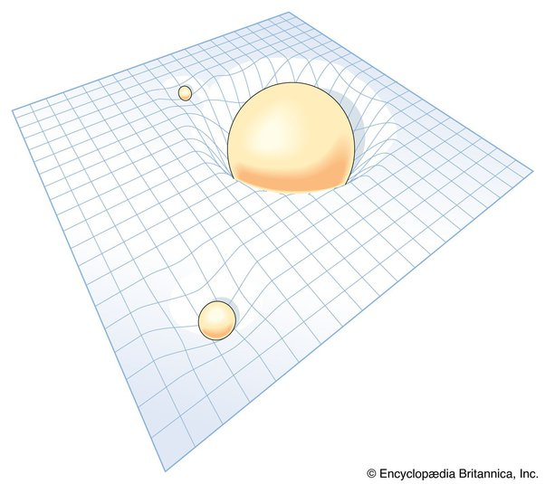

Sample 03 · explainer · full text
Introduction to black holes
A writing sample, not client work. Four hundred words was never the point — the point is that a reader with no physics knowledge can finish this and explain an event horizon to someone else. Published in full below.
Background
Black holes are one of the more mysterious aspects of our universe. However, even though there is a lot that we still don't know, there is a lot that we do know too. Before we get into black holes, let's start with a core aspect of black holes: gravity.
What's gravity?
Gravity is an invisible force created by all matter. The more mass an object has, the "stronger" the gravity is.
Gravity & space-time
Draw a stick figure on a piece of paper. That figure can only experience life within that piece of paper; they can't see or sense you. They are living on a 2D surface, like a square, where they can only move up, down, left, and right.
In a cube, which is a 3D space, we can move up, down, left, right, back, and forward.

Image source: MathIsFun.com
Picture your bed and its flat surface. The surface of your bed represents a two-dimensional (2D) world. The bowling ball represents three-dimensional (3D) space. Now, imagine placing a bowling ball in the middle of the bed. What happens to the bed?

Image source: JupiterScientific.org
As the above image shows, the bed dips to accommodate the weight and mass of the bowling ball. Those living within the 2D surface would not see any difference in their world, but the fabric of their universe has moved.
Picture this same scenario, except the bed represents 3D space and the bowling ball represents 4D space-time. In this representation, the bowling ball's gravity is bending the fabric of space-time (4D). In 3D, we cannot see this bending of space-time.

Image source: Encyclopædia Britannica
What are black holes?
A black hole is an invisible object* that holds significant mass within a tiny volume, giving it immense gravity. There are different types of black holes, but this introduction focuses on stellar black holes.
*Black holes are not technically objects because they are not composed of anything. The "shell" of a black hole is simply the fabric of space-time. So, while it would be more accurate for me to refer to it as an area of space-time, that's harder to imagine and conceptualize, so I'll use "object."
Every black hole has:
- 01An event horizon: the "edge" of the black hole's entrance. Once something moves past the event horizon, it cannot escape.
- 02A singularity: the center of a black hole. It is the space of infinite gravity, mass, and density. It is also infinitely small. This seems like a paradox, right? Yeah, sorry, I don't have an answer for you. Black holes: confusing scientists since the 18th century.
This is the first photo ever taken of a black hole:

Image source: Event Horizon Telescope Collaboration
I thought black holes weren't visible. What's that light?
That light is coming from a star that the black hole is "eating." When an object, like a star, gets caught in a black hole's gravity, it will often orbit the black hole while it gets stretched apart due to the black hole's immense gravity. (Imagine if Hans Christian Andersen created a dark, twisted spiral wishing well.)

GIF found at MakeAGif.com
How big are black holes?
Bigger than a molecule but smaller than the universe. Just kidding — kind of. A black hole can, in theory, be any size. Although very tiny black holes don't contain enough energy to sustain themselves for long, so they dissipate quickly. The more mass a black hole has, the longer it can sustain itself. So if a black hole "eats" a lot of stars or other matter, it can also grow in size and mass.
It's important to note that the mass of a black hole is directly proportional to its "surface" size. So even a very tiny black hole still has immense mass: an atom-sized black hole would have the mass of an entire mountain.
How do black holes form?
There are a few ways we know they can form, and some additional ways scientists theorize they can form, and it differs based on the type of black hole. Here is how two of the most common black holes form:
Stellar black holes form when a massive star dies. A very large star can become so unstable that it collapses in on itself and implodes into a black hole. The specific mass and circumstances of the star's death determine whether a black hole will form. For instance, the larger the star, the more likely a black hole will form during the star's collapse.
Supermassive black holes are another common type, but they're more mysterious. One theory is that they formed at the beginning of the universe during the Big Bang, due to the sudden, rapid expansion and warping of space-time. In 2023, scientists discovered the oldest supermassive black hole we've ever found: a 13.33 billion-year-old supermassive black hole. (For comparison, today we exist 13.8 billion years after the Big Bang.) This discovery has led scientists to be more confident in the theory that supermassive black holes formed during the Big Bang. With continuing advances in technology, scientists expect to eventually discover even older ones.
How do we find black holes?
Since black holes are essentially invisible due to their ability to trap everything, including light, there are only two ways that scientists are currently able to detect them.
Gravitational lensing
When gravity is "strong" enough, it can bend even light itself. Before LIGO, scientists were able to locate black holes by looking for gravitational lensing surrounding a black spot. This meant that a black hole was causing the illusion.

Image source: NASA, ESA, STScI, Joseph Olmsted
Animated simulation of gravitational lensing:

Image source: Wikipedia
Gravitational waves
In 2016, the Laser Interferometer Gravitational-Wave Observatory (LIGO) successfully detected gravitational waves from merging black holes. With multiple partner facilities located around the world, they were able to triangulate where the black holes were located in the universe. How all that works is for a Black Holes 201 lesson — but if you're curious, you can read more about it here.

Image source: LIGO at Caltech
What's the point of black holes?
Despite their reputation as the mysterious, destructive beasts of the universe, black holes are an essential part of the universal ecosystem. Here are two examples:
Are they the universe's recycling system?
Black holes leak, very, very slowly. They give off a faint glow, called Hawking radiation, named after Stephen Hawking. Over time, this process causes the black hole to eventually "evaporate" entirely, leaving behind nothing.
Here's the part that trips some people up: a black hole doesn't digest a star and burp it up later. Hawking radiation comes from quantum effects happening right at the event horizon. So while it may appear to be "recycling" matter, it's not. It's more like a bonfire, where you get energy back but you don't get the log back.
What happened to the log, then, or the matter in black holes? Nobody knows, and this is one of the unsolved problems in physics. Physicists consider this a black hole paradox, and it's been argued about for decades without resolution.

Image source: NASA/JPL-Caltech
Black holes help spread elements like seeds
When a star dies and collapses, it can explode to create a supernova. During this event, it is common for the core of very large stars to implode as well, forming a black hole. During this implosion and explosion, some of the star's elements — carbon and oxygen, for instance — spew out into the surrounding universe. The released elements then float through space indefinitely until they come across existing celestial objects to combine with, or until they help form new ones.
"The shock waves from the explosions may also trigger the formation of new stars and new solar systems, so our existence on Earth might be due to an explosion that formed a black hole." — Chandra X-Ray Observatory at Harvard

Image source: INGIMAGE
Glossary
- Event horizon
- The gravitational "boundary" of a black hole that not even light can escape from.
- Hawking radiation
- Faint radiation produced by the edge of a black hole (the event horizon), causing the black hole to slowly lose mass until it eventually evaporates.
- Mass
- The amount of matter an object contains. This differs from weight, which measures the force of gravity on an object. A ball with a mass of 1 kg would weigh about 2.5 lbs on Earth and 0.4 lbs on the moon, since gravity is stronger on Earth than on the moon.
- Matter
- Anything that has mass and takes up space. Clouds are matter, since water vapor has mass and takes up space. Sound waves aren't, since they don't.
- Singularity
- The term for the scientifically puzzling black hole's core: the heart of every black hole contains infinite gravity, mass, and density within an infinitely small space.
- Space-time
- A theoretical and mathematical concept that considers space and time to be inherently connected. Space is three dimensions and time is one, which makes space-time four-dimensional.
- Stellar black hole
- The black holes most people picture when they hear the term. These "regular" black holes are 5–20 times more massive than our sun.
- Stephen Hawking
- A world-renowned theoretical physicist who revolutionized the field and made significant contributions to our understanding of black holes and the universe.
- Supermassive black hole
- A black hole of extremely large size and even more extreme mass — millions to billions of times more massive than our sun. One sits at the center of most galaxies, including our own.
- Supernova
- A massive and extremely bright explosion of a star.
Sources
- A Brief History of Time (book) by Stephen Hawking
- Hawking on the Big Bang and Black Holes, Vol. 8 (book) by Stephen Hawking
- Hawking Radiation (webpage), University of Colorado, Boulder
- Q&A: Black Holes, Chandra X-Ray Observatory at Harvard